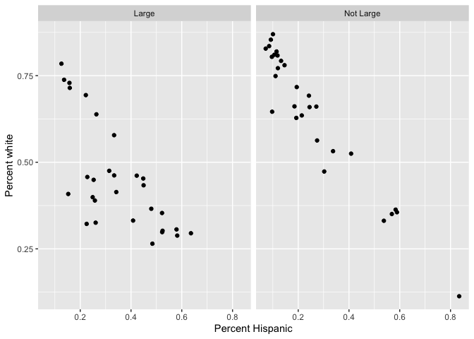
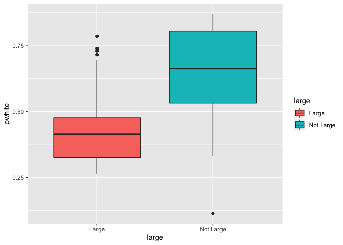
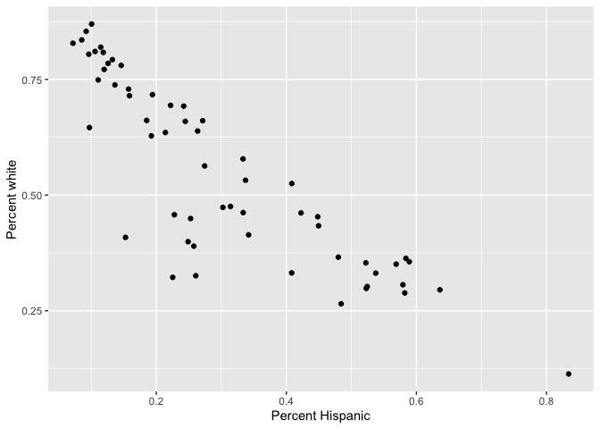
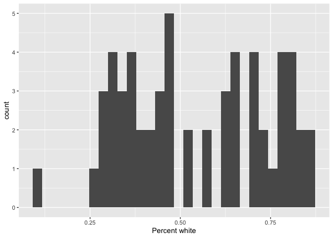
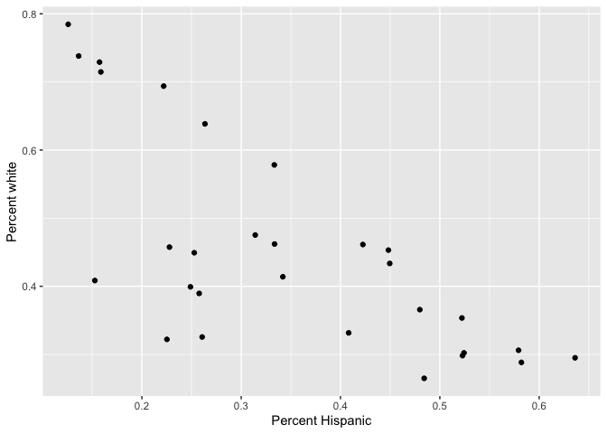
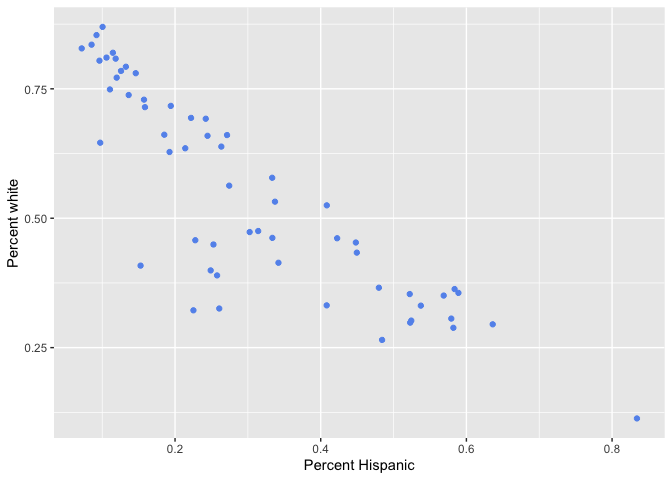

Introduction to the Tidyverse
GEO 200CN - Quantitative Geography
Professor Noli Brazil
In the past couple of lab guides, you went through the basic fundamentals of processing data in R. The functions and the overall approach to programming you learned in these guides are a part of R’s “base” language. Base R is the set of R tools, packages and functions that are pre-installed into R. In simple terms, it represents the building blocks of the language. Folks who learned R more than 5 or so years ago, started out in the same way you did the last few labs. However, starting around 2014 or thereabouts, a new way of approaching R was born. This approach is known as tidy R or the tidyverse. Cue dramatic sound effect.
Tidyverse is a collection of high-powered, consistent, and easy-to-use packages developed by a number of thoughtful and talented R developers. It makes many of the base functions and approaches from the last few labs more user friendly and, well, tidy.
Now, you might be asking yourself, “is he asking me to learn ANOTHER language??!” Yes and no. Tidy R is built off of base R functions, so there is a natural connection. But, code written in the tidyverse style is much easier to read. For example, if you want to select certain variables from your data frame, you use an actual tidy function named select(). Base R, on the other hand, has a somewhat inconsistent and sometimes incomprehensible mish-mash of function and argument styles.
The consistency of the tidyverse, together with the goal of increasing productivity, mean that the syntax of tidy functions is typically straightforward to learn. You now might be asking yourself “why didn’t he just cut straight to the tidyverse?” First, many of the topics you learned in the last couple of labs are fundamental to understanding R, tidy or not. For example, the data types remain the same whether in base or tidy world. Second, tidyverse is growing, but has not taken over. You need to know base R to do some of the data management and analysis procedures that we will be learning later in the class, particularly those that are specific to raster analysis.
With that said, my approach to this course is to lean towards the tidy way of doing things. This guide will provide you the basic fundamentals of processing nonspatial data in R using tidyverse functions. I will highlight in places where tidy R differs from the base R approach. Because of time constraints, we will not be able to go through all of tidyverse’s functions in this guide. Some you will encounter in later lab guides. Others you may need to learn on your own. The best resource is the book R for Data Science (RDS), which is free online and was written by tidyverse’s creators. You can also go straight to the tidyverse official website.
Are you ready to enter the tidyverse? Yes, of course, so here is your first badge. Wear it proudly my young friends! And away we go!

Tidyverse package
All of tidyverse’s functions are located in the package tidyverse. Whenever you want to bring in a new package into R, you have to install it using the function install.packages()
install.packages("tidyverse")You will install packages once and never more (unless you update R). Next, load the package in your current session using library()
library(tidyverse)Unlike installing, loading a package using library() needs to happen every time you start a new R session.
Reading and writing data
Let’s bring in some data to help illustrate the use of tidy R functions. I uploaded a file on GitHub containing the number of Hispanic, white, Asian, and black residents in 2017 in California counties taken from the United States American Community Survey. The data are also located on Canvas in the Lab and Assignments Week 2 folder. To import this file in R, use the read_csv() command
counties <- read_csv("https://raw.githubusercontent.com/geo200cn/data/master/week2data.csv")To write or save data, you would use the function write_csv().
Note the difference between the tidy R and base R reading functions - tidy is read_csv() and base is read.csv(). What is the difference? The function read.csv() stores your data into a regular data frame. The function read_csv() stores your data in a special tidy R object - a tibble, which we discuss next. tidyverse can read in more than just csv files. It has a suite of read_ functions that are a part of the subpackage readr. The goal of readr is to provide a fast and friendly way to read rectangular data (like csv, tsv, and fwf). It is designed to flexibly parse many types of data found in the wild, while still cleanly failing when data unexpectedly changes. To learn more about these functions, see readr’s dedicated site.
Before you move on, by learning how to read and write data the tidy way, you’ve earned another badge! Hooray!
Tibbles
Although the tidyverse works with all data objects, its fundamental object type is the tibble. Tibbles are essentially a special variant of data frames that have desirable properties for printing and joining. To illustrate comparisons between tibbles and regular data frames, let’s bring in the county data we downloaded above but using the base R function read.csv()
counties.df <- read.csv("https://raw.githubusercontent.com/geo200cn/data/master/week2data.csv")The object counties.df is a regular data frame. The first difference between regular data frames and tibbles is how the dataset “looks.” First, the tibble.
counties## # A tibble: 290 x 4
## GEOID NAME variable estimate
## <chr> <chr> <chr> <dbl>
## 1 06001 Alameda County, California tpopr 1629615
## 2 06001 Alameda County, California nhwhite 524881
## 3 06001 Alameda County, California nhblk 175063
## 4 06001 Alameda County, California nhasn 468356
## 5 06001 Alameda County, California hisp 367041
## 6 06003 Alpine County, California tpopr 1203
## 7 06003 Alpine County, California nhwhite 777
## 8 06003 Alpine County, California nhblk 18
## 9 06003 Alpine County, California nhasn 8
## 10 06003 Alpine County, California hisp 117
## # … with 280 more rowsTibbles have a refined print method that shows only the first 10 rows, and only the columns that fit on the screen. In addition, each column reports its name and type.
Tibbles are designed so that you don’t accidentally overwhelm your console when you print large data frames. Compare the print output above to what you get with a data frame
counties.dfUgly, right?
You may have also noticed that the NAME variable in the tibble was stored (by default) as a character vector and not a factor, as was done in counties.df.
is.character(counties.df$NAME)## [1] FALSEis.factor(counties.df$NAME)## [1] TRUEThis is another important difference between tidy and base R. read_csv() will always read variables containing text as character variables. In contrast, the base R function read.csv() will, by default, convert any character variable to a factor. Tidy R figures that if you really wanted a character, you can easily convert it when you load it in. read_csv() will also not convert numbers with a leading zero into an integer. It figures that if you want to convert it into an integer, you can do it after the data are read in. In contrast, read.csv() will assume you want it in an integer. And you know what they say about assuming.
Anyway, you earned another badge. Yes!

Reshaping
Tidying up a dataset for your specific data project means following three basic rules: (1) Each variable must have its own column, (2) each observation must have its own row, and (3) each value must have its own cell. The dataset counties is not tidy for the purposes of this lab as counties are not the unit of observations.
We’ll need to “spread” or reshape the dataset to get it to the form we want. Right now, the data is in long form (county by variable as rows) and needs to be converted to wide form (counties as rows).
A wide-form version will have variables (tpopr, nhwhite, nhblk, nhasn, and hisp), one for each county. So in this case, the value that you want to spread is the estimate variable, and the key that you want to group by is the variable variable. To go from long to wide in tidy R, you use the function spread()
counties <- spread(counties, key = variable, value = estimate)
counties## # A tibble: 58 x 7
## GEOID NAME hisp nhasn nhblk nhwhite tpopr
## <chr> <chr> <dbl> <dbl> <dbl> <dbl> <dbl>
## 1 06001 Alameda County, California 367041 468356 175063 524881 1629615
## 2 06003 Alpine County, California 117 8 18 777 1203
## 3 06005 Amador County, California 4943 565 764 29571 37306
## 4 06007 Butte County, California 35445 9852 3282 164184 225207
## 5 06009 Calaveras County, California 5166 527 258 36932 45057
## 6 06011 Colusa County, California 12539 328 186 7800 21479
## 7 06013 Contra Costa County, California 284003 177544 93140 504818 1123678
## 8 06015 Del Norte County, California 5281 741 484 17233 27442
## 9 06017 El Dorado County, California 23279 7805 1614 145153 185015
## 10 06019 Fresno County, California 509442 96128 45217 293677 971616
## # … with 48 more rowsWe now have rows as counties and columns as variables. To go from wide to long form, you use the gather() function. Use it to get counties back to long.
Your data are now in tidy form! Here’s another badge for you. High five o/ \o
Data manipulation
One of the clear advantages of tidy R, at least when you are first learning R, is its assortment of user-friendly data manipulation functions, which is a part of its dplyr package. Compared to base R, the beauty of these dplyr functions is that they feature consistent design principles and easily work with non-standard evaluation (i.e., you don’t have to put quotes around variable names).
In the tidyverse, you will almost never use the [,] indexing nor the $ data frame column indexing that are pervasive throughout base R code. So, to subset (filter) rows, use the filter() function. For example, to get Yolo county, which has a FIPS code of “06113”
filter(counties, GEOID == "06113")The name filter tells you exactly what you are doing. The first argument is the data object you want to filter on and the second argument is your filtering criteria. See how easy that was?
Before we compare how filtering is done in base R, let’s duplicate counties so we don’t lose it.
counties2 <- countiesAnd now let’s filter Yolo county using the base R approach
counties2[counties2$GEOID == "06113",]Want to keep or select certain columns? Use the select() function, duh! Let’s keep the variables GEOID, NAME and tpopr
select(counties, GEOID, NAME, tpopr)In base R?
counties2[,c("GEOID", "NAME", "tpopr")]Rename the variable NAME to County using the function rename().
rename(counties, County = NAME)In base R
names(counties2)[names(counties2) == 'NAME'] <- 'County'Use the mutate() function to add new variables to your dataset. For example, to calculate percent white in each county
mutate(counties, pwhite = nhwhite/tpopr)You can create multiple variables within the same mutate() command.
mutate(counties, pwhite = nhwhite/tpopr, phisp = hisp/tpopr,
pasn = nhasn/tpopr, pblk = nhblk/tpopr)In base R?
counties2$pwhite <- counties2$nhwhite/counties2$tpopr
counties2$phisp <- counties2$hisp/counties2$tpopr
counties2$pasn <- counties2$nhasn/counties2$tpopr
counties2$pblk <- counties2$nhblk/counties2$tpoprWant to sort or arrange your dataset based on ascending values of population size? Use the function arrange()
arrange(counties, tpopr)Descending order? Add a negative sign in front of the variable.
arrange(counties, -tpopr)Base R
counties2[order(counties2$tpopr),]Note that with all the tidy functions, we haven’t re-defined the counties data frame, so all we have done here is print out the data frame with changes. To redefine the data frame with the changes, assign it back to counties using the arrow operator.
We covered many of the main data manipulation functions that you will routinely encounter in this class, but there are a number of other useful dplyr functions, which you can look up in the RDS textbook linked in the introduction.
You’ve now earned another Tidy badge. Congratulations!

Function conflicts
You’ll learn to understand that R is beautiful. But, it isn’t perfect. One of its annoyances is that because R is open source, R users who contribute packages sometimes create functions with the same names. To demonstrate this, let’s load in the package MASS
library(MASS)##
## Attaching package: 'MASS'## The following object is masked from 'package:dplyr':
##
## selectYou see the warning? Keep it in mind.
Let’s use the function select() again to keep the variables GEOID, NAME, and tpopr from counties
select(counties, GEOID, NAME, tpopr)## Error in select(counties, GEOID, NAME, tpopr): unused arguments (GEOID, NAME, tpopr)What in the world just happened? By loading MASS, we have overwritten dplyr’s select() function (hence the warning when you loaded MASS). R will choose the function from the package that was most recently loaded. The normal workaround is to be explicit about which select() function you want by using dplyr::select() as in
dplyr::select(counties, GEOID, NAME, tpopr)## # A tibble: 58 x 3
## GEOID NAME tpopr
## <chr> <chr> <dbl>
## 1 06001 Alameda County, California 1629615
## 2 06003 Alpine County, California 1203
## 3 06005 Amador County, California 37306
## 4 06007 Butte County, California 225207
## 5 06009 Calaveras County, California 45057
## 6 06011 Colusa County, California 21479
## 7 06013 Contra Costa County, California 1123678
## 8 06015 Del Norte County, California 27442
## 9 06017 El Dorado County, California 185015
## 10 06019 Fresno County, California 971616
## # … with 48 more rowsPipes
One of the important innovations from the tidyverse is the pipe operator %>%. Pipes are the workhorse of tidy analyses. Piping allows you to chain together many functions, eliminating the need to define multiple intermediate objects to use as the input to subsequent functions. Pipes are also the primary reason that tidyverse code is fundamentally easier to read than base R code.
It may seem complicated at first, but what the pipe does is actually quite simple. That is, it allows users to write linear code. To illustrate the use of the pipe, consider the following base R code that takes the mean of the log of three numbers
mean(log(c(1, 3, 9)))## [1] 1.098612Notice how the numbers c(1, 3, 9) are nested inside log(), which is then nested inside mean(). If you’re reading the code from left-to-right, it means the functions are performed in reverse order from how they are written. If we broke the code down into its three functions, we would actually expect the order of operations to proceed as follows
- Concatenate numbers into vector
c(...) - Log the numeric vector
log(...) - Estimate the mean of the logged numeric vector
mean(...)
Now consider how you would do this using pipes.
c(1, 3, 9) %>%
log() %>%
mean()## [1] 1.098612In contrast to the nested base code, the tidy code is linear; in other words, the code appears in the same order (moving from left to right) as the operations are performed. Let’s go back to our counties dataset to use pipes to
- create the percent race/ethnicity variables
- rename the variable NAME to County
- keep the variables GEOID, NAME, tpopr, and percent race/ethnicity
counties3 <- counties %>%
mutate(pwhite = nhwhite/tpopr, phisp = hisp/tpopr,
pasn = nhasn/tpopr, pblk = nhblk/tpopr) %>%
rename(County = NAME) %>%
dplyr::select(GEOID, County, pwhite, phisp, pasn, pblk, tpopr)In the code above, the tibble counties is piped into the command mutate(). This command creates the percent race/ethnicity variables. Once mutate() is done doing its thing, the result gets piped into the function rename(), which renames NAME to County. This result gets piped into select(), which keeps the appropriate variables. Finally, the final result gets saved into the data object counties3.
One more neat thing about piping. Notice that saving the result into an object named counties3 happened in the beginning. So, it’s not exactly linear or reading left to right. So, why don’t we make it that way?
counties %>%
mutate(pwhite = nhwhite/tpopr, phisp = hisp/tpopr,
pasn = nhasn/tpopr, pblk = nhblk/tpopr) %>%
rename(County = NAME) %>%
dplyr::select(GEOID, County, pwhite, phisp, pasn, pblk, tpopr) -> counties4At the end of the pipe, we use the -> operator. This is somewhat blasphemous, because long time R users are used to the <- operator to assign or save a result. But, boo hoo for you, we’ve got a new toy now! The -> makes complete sense in the tidyverse piping world.
Piping makes code clearer, and simultaneously gets rid of the need to define any intermediate objects that you would have needed to keep track of while reading the code. PIPE, Pipe, and pipe whenever you can. Badge it!

Summarizing data
So far we’ve gone through tidyverse’s data cleaning and manipulation functions. What if you want to summarize or describe your data? Well, use the function summarize(), of course! (or summarise() if you prefer British English).
To illustrate, let’s calculate mean percent white in California counties.
summarize(counties3, mean(pwhite))## # A tibble: 1 x 1
## `mean(pwhite)`
## <dbl>
## 1 0.548The first argument inside summarize() is the data object counties3 and the second argument is the function calculating the specific summary statistic, in this case mean(), which unsurprisingly calculates the mean of the variable you indicate in between the parentheses.
The summarize function plays very nicely with the group_by() function. The group_by() function applies another function independently within groups of observations (where the groups are specified by a categorical variable in your data frame). To illustrate, first generate a variable called large that designates a county as “Large” if it has a population greater than 182,486, which happens to be the median, and “Not Large” otherwise.
counties3 <- mutate(counties3, large = ifelse(tpopr > 182486, "Large", "Not Large"))Next, use group_by() on this new variable large to find the mean percent white by population size category
counties3 %>%
group_by(large) %>%
summarize(mean(pwhite))## # A tibble: 2 x 2
## large `mean(pwhite)`
## <chr> <dbl>
## 1 Large 0.453
## 2 Not Large 0.642We can create a frequency table that shows the percent of counties that are Large and Not Large. To get these percentages, you’ll need to combine the functions group_by(), summarize() and mutate() using %>%.
counties3 %>%
group_by(large) %>%
summarize(n = n()) %>%
mutate(freq = n / sum(n))## # A tibble: 2 x 3
## large n freq
## <chr> <int> <dbl>
## 1 Large 29 0.5
## 2 Not Large 29 0.5Let’s break up this chunk of code to show exactly what was done here. First, counties3 was piped into the group_by() function. Next, group_by(large) separates the neighborhoods by Large/No Large designation. We then used summarize() to count the number of neighborhoods by Large/Not Large designation. The function to get a count is n(), and we saved this count in a variable named n. This gave us the following table.
counties3 %>%
group_by(large) %>%
summarize (n = n())## # A tibble: 2 x 2
## large n
## <chr> <int>
## 1 Large 29
## 2 Not Large 29There are 29 neighborhoods that are designated as Large. Next, this table is piped into mutate(), which creates a variable showing the proportion of all neighborhoods by Large/Not Large designation. The code sum(n) adds the values of n: 29+29 = 58. We then divide the value of each n by this sum: 29/58 = 0.50 and 29/58 = 0.50. That yields the final frequency table.
No badge because summarize() and group_by() are dplyr functions.
Data visualization
Instead of tables, you might want to summarize your data using plots. ggplot2 is tidyverse’s data visualization package. The graphing function is ggplot() and it takes on the basic template
ggplot(data = <DATA>) +
<GEOM_FUNCTION>(mapping = aes(x, y)) +
<OPTIONS>()ggplot()is the base function where you specify your dataset using thedata = <DATA>argument.You then need to build on this base by using the plus operator
+and<GEOM_FUNCTION>()where<GEOM_FUNCTION>()is a unique function indicating the type of graph you want to plot. Each unique function has its unique set of mapping arguments which you specify using themapping = aes()argument. Charts and graphs have an x-axis, y-axis, or both. Check this ggplot cheat sheet for all possible geoms.<OPTIONS>()are a set of functions you can specify to change the look of the graph, for example relabeling the axes or adding a title.
The basic idea is that a ggplot graphic layers geometric objects (circles, lines, etc), themes, and scales on top of data.
You first start out with the base layer. It represents the empty ggplot layer defined by the ggplot() function.
ggplot(counties3)
We haven’t told ggplot() what type of geometric object(s) we want to plot, nor how the variables should be mapped to the geometric objects, so we just have a blank plot. We had geoms to paint the blank canvas.
From here, we add a “geom” layer to the ggplot object. Layers are added to ggplot objects using +, instead of %>%, since you are not explicitly piping an object into each subsequent layer, but adding layers on top of one another.
Let’s create a histogram of percent white. Histograms are used to summarize a single numeric variable. To create a histogram, use geom_histogram() for <GEOM_FUNCTION()>. Inside geom_histogram(), you will specify the aesthetic mappings from the variables to the geometric objects that you want.
ggplot(counties3) +
geom_histogram(mapping = aes(x=pwhite)) +
xlab("Percent white") ## `stat_bin()` using `bins = 30`. Pick better value with `binwidth`.
The above code first specifies the data, then the mapping geometric object (the histogram), and then other aspects of the plot, in the above case, an x-axis label.
What about plotting two numeric variables? A common plot for this is the scatter plot. Let’s plot pwhite and phisp using the geom geom_point()
ggplot(counties3) +
geom_point(mapping = aes(x = phisp, y = pwhite)) +
xlab("Percent Hispanic") +
ylab("Percent white")
Here, we specify both an x and y axis in aes(). Want to change the color of the points? Add a col argument to the geom_point() function
ggplot(counties3) +
geom_point(mapping = aes(x = phisp, y = pwhite), col = "cornflowerblue") +
xlab("Percent Hispanic") +
ylab("Percent white")
What if you wanted to establish separate colors for counties that are large and not large? You will need to include the color argument inside the aes() function.
ggplot(counties3) +
geom_point(mapping = aes(x = phisp, y = pwhite, col = large)) +
xlab("Percent Hispanic") +
ylab("Percent white")
You can pipe in a dataset into ggplot(). For example, a scatterplot of pwhite and phisp just for large counties
counties3 %>%
dplyr::filter(large == "Large") %>%
ggplot() +
geom_point(mapping = aes(x = phisp, y = pwhite)) +
xlab("Percent Hispanic") +
ylab("Percent white")
Why not show scatterplots for both large and not large counties? To do this, add the function facet_wrap()
ggplot(counties3) +
geom_point(mapping = aes(x = phisp, y = pwhite)) +
xlab("Percent Hispanic") +
ylab("Percent white") +
facet_wrap(~large) 
As BBR Chapter 2 explains, boxplots are another common exploratory tool. Boxplots are particularly useful for examining the relationship between a categorical and numeric variable. The <GEOM_FUNCTION>() is geom_boxplot(). Boxplots are automatically grouped by the x-aesthetic provided. To color boxplots, use the fill argument.
counties3 %>%
ggplot() +
geom_boxplot(aes(x = large, y = pwhite, fill = large))ggplot() is a powerful function, and you can make a lot of really visually captivating graphs. You can change colors, add text labels, layer different plots on top of one another or side by side. You can also make maps with the function, which we’ll cover a few labs from now. You can also make your graphs really “pretty” and professional looking by altering graphing features using <OPTIONS(), including colors, labels, titles and axes. For a list of ggplot() functions that alter various features of a graph, check out Chapter 22 in RDS.
Here’s your ggplot2 badge. Wear it with pride!

Iterations and Loops
The tidy version of the apply() function, and more generally tidy’s way of iterating and looping, comes from the package purrr (like a cat). The specific tidy function is map().
Fundamentally, maps are for iteration. In the example below I will iterate through the vector c(1, 4, 7) by adding 10 to each entry. The following code is how you would do this using the base R apply functions
lapply(c(1, 4, 7), function(number) {
return(number + 10)
})## [[1]]
## [1] 11
##
## [[2]]
## [1] 14
##
## [[3]]
## [1] 17or
sapply(c(1, 4, 7), function(number) {
return(number + 10)
})## [1] 11 14 17For the purrr equivalents, if you want your output to be a list, you would use map(), if you want it to be a numeric vector, then you would use map_dbl(), if you want it to be a character, then it is map_chr().
map(c(1, 4, 7), function(number) {
return(number + 10)
})## [[1]]
## [1] 11
##
## [[2]]
## [1] 14
##
## [[3]]
## [1] 17map_dbl(c(1, 4, 7), function(number) {
return(number + 10)
})## [1] 11 14 17map_chr(c(1, 4, 7), function(number) {
return(number + 10)
})## [1] "11.000000" "14.000000" "17.000000"If you want to return a data frame, then you would use map_df()
For a more comprehensive look at purrr, I recommend Jenny Bryan’s tutorial.
Cute kat, nice badge.
You’re done!
Website created and maintained by Noli Brazil